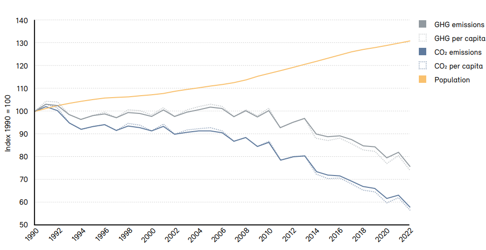
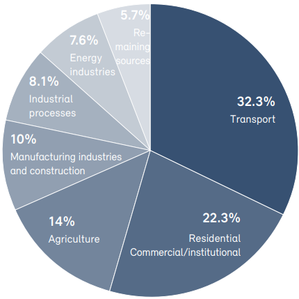
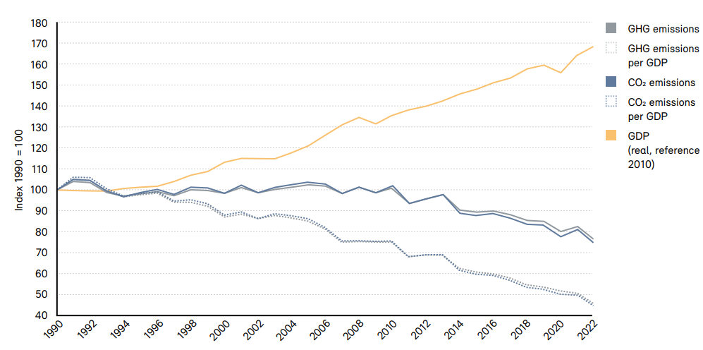

Switzerland's second nationally determined contribution under the Paris Agreement 2031-2035
This submission is made in accordance with Article 4 of the Paris Agreement and UNFCCC decisions 1/CP.21 and 4/CMA.1. According to Decision 1/CP.21, paragraphs 24 and 25, Parties have the obligation to submit to the secretariat their nationally determined contributions at least 9 to 12 months in advance of the relevant session of the Conference of the Parties serving as the meeting of the Parties to the Paris Agreement with a view to facilitating the clarity, transparency and understanding of these contributions, and Parties whose intended nationally determined contribution contains a time frame up to 2030 are requested to communicate or update by 2020 these contributions and to do so every five years thereafter.
Foreword
Switzerland is pleased to submit its second nationally determined contribution (NDC) under the Paris Agreement covering the years 2031 to 2035.
Switzerland is particularly affected by climate change, with a current climate mean temperature of 2.8 degrees Celsius above pre-industrial levels.
For global warming not to exceed the threshold of 1.5 degrees Celsius, green- house gas emissions need to be curbed with effective measures. Avoiding irreversible changes in many areas of the global atmosphere-biosphere-hydro- sphere system becomes an increasingly challenging task. Tackling this task is essential to preserve the greatest possible scope for future generations to shape their lives in a prosperous way.
Switzerland is convinced that it is only through concerted action that the global community will be able to act in time to avoid the worst consequences of climate change. Switzerland remains committed to the full implementation of the Paris Agreement.
As a Party to the Paris Agreement, Switzerland fulfils its obligation and con- tributes to global action on climate change. In past years, emissions generated in Switzerland have decreased, and Switzerland achieved its 2020 target for the second commitment period under the Kyoto Protocol. In 2017, Switzerland submitted its first NDC with a mitigation target to halve its emissions by 2030, which corresponds to an average reduction in greenhouse gas emissions of at least 35 percent in the period from 2021 to 2030. Since then, the Swiss popu- lation has inscribed in law the goal to reach net zero greenhouse gas emissions by 2050.
Now it is time to look ahead. Switzerland's second NDC marks a milestone towards net zero by 2050. This NDC is further aligned with the 1.5 degrees Celsius objective and responds to the recommendations of the IPCC. Reducing emissions in line with these commitments will require the decarbonisation of the economy and the creation of framework conditions that enable a sustainable everyday life.
Switzerland's second NDC
Switzerland is committed to follow the recommendations of the IPCC in order to limit global warming to 1.5 degrees Celsius. Switzerland's second NDC is to reduce its greenhouse gas emissions by at least 65 percent by 2035 compared to 1990 levels, to be implemented as an emission budget covering 2031-2035. Thus, the target corresponds to a greenhouse gas budget of 106.8 million tonnes of CO2 equivalents1, which is equivalent to an average reduction of greenhouse gas emissions by at least 59 percent over the period 2031-2035. The methodological approaches under- lying the Swiss NDC are included in this communication.
Further, Switzerland communicates a net-zero target for all greenhouse gas emissions by 20502.
The Federal Act on Climate Protection Targets, Innovation and Strengthening Energy Security (Climate and Innovation Act) adopted by popular vote in 2023 defines intermediate targets for emission development (compared to 1990 emis- sion levels) towards net-zero as well as a net-negative path- way thereafter:
Between 2031 and 2040: minus at least 64 percent on average;
Until 2040: minus at least 75 percent;
Between 2041 and 2050: minus at least 89 percent on average.
Indicative targets per sector as set in the Climate and Innovation Act: The reduction targets must be achieved by reducing greenhouse gas emissions in Switzerland com- pared to 1990 as follows:
1. In the building sector:
By 2035: minus 66 percent;
Until 2040: minus 82 percent;
By 2050: minus 100 percent.
2. In the transport sector (excluding international aviation):
By 2035: minus 41 percent;
Through 2040: minus 57 percent;
Until 2050: minus 100 percent.
3. In the industry sector:
By 2035: minus 42.5 percent;
Through 2040: minus 50 percent;
Until 2050: minus 90 percent.
4. In other sectors (agriculture, waste, F-gases)
By 2035: minus 33 percent;
From agriculture by 2035: minus 25 percent3;
From agriculture by 2050: minus 40 percent4;
Greenhouse gas emissions footprint (i.e. consumption-based emissions over the whole life cycle) of food per capita (compared to 2020): minus 25 percent by 2030, minus 35 percent by 2035, and minus two thirds by 2050;
Switzerland's agricultural production should contribute at least 50 percent to the food requirements of the Swiss population.
These sectoral emission reductions targets imply remain- ing hard-to-abate residual emissions of approximately 13- 14 million tonnes of CO2 equivalents by 2050, that will be addressed through carbon capture and storage (CCS) and carbon dioxide removal (CDR): approximately four million tonnes of CO2 equivalents in the industry sector and three million tonnes of CO2 equivalents from waste incineration are foreseen to be captured and stored permanently. An- other five million tonnes of CO2 equivalents originating from the agriculture sector and one to two million tonnes of CO2 from international aviation are foreseen to be balanced by negative emissions. All enterprises in Switzerland must reach net-zero emissions by 2050 at the latest, taking at least direct and indirect emissions into account.
According to the Climate and Innovation Act, after 2050, the amount of CO2 captured from the atmosphere and stored using CDR must be greater than the remaining greenhouse gas emissions.
By 2040, the federal administration must reach at least net-zero in its emissions. In addition to direct and indirect emissions, emissions generated upstream and downstream by third parties are equally taken into account. The cantons aim at minimum for a net zero emission objective by 2040 for their central administrations, the same goes for enterprises affiliated to the Swiss Confederation. The Swiss Confeder- ation supports them in this role.
Today, Switzerland's share in global greenhouse gas emis- sions is around 0.1 percent. In 2022, total greenhouse gas emissions of Switzerland (including LULUCF and indirect CO2) equated 42.1 million tonnes of CO2 equivalents. This corresponds to emissions of 4.8 tonnes of CO2 equivalents per capita, which is below world's average. Both total emis- sions and average emissions per capita have reached their highest levels in the 1990s and have been falling continu- ously for several years.
Since 1990, Switzerland has experienced substantial eco- nomic and population growth. These two parameters in- fluence the consumption and production of energy, traffic volumes and the number and volumes of heated buildings, which strongly impact greenhouse gas emissions in almost all sectors. Compared with 1990, by 2022, Switzerland's real gross domestic product (GDP) as a measure of economic output had risen by 68 percent, the building space that had to be heated for households increased by 53 per- cent, 54 percent more passenger cars, motorcycles and coaches were in circulation on Swiss roads and 31 percent more people lived in Switzerland. Greenhouse gas emis- sions in this period nevertheless decreased slightly: new buildings are better insulated than in the past, cars have become more fuel efficient, and fossil fuels are increasing- ly substituted with renewable energy sources.
Figure 1 and Figure 2 show the respective reduction over the period 1990 to 2022 in greenhouse gas emissions per capita by 42.3 percent and in greenhouse gas emissions per real gross domestic product by 55.0 percent, indicat- ing a decoupling of economic growth from greenhouse gas emissions.
Excluding international aviation, maritime transport and land-use change / forestry.

The largest shares of greenhouse gas emissions arise from the transport and buildings sector. Agriculture and industry also contribute substantial shares to Switzerland's total greenhouse gas emissions, while energy industries are less emissions-intensive when compared with many other countries.
The environment, society, and the economy are affected. The current climate mean temperature in Switzerland has risen by 2.8 degrees Celsius compared to the pre-indus- trial average of 1871-1900. The year 2024 in particular was 3.3 degrees Celsius warmer than the pre-industrial period.5 In the Alps, glaciers have been retreating at an accelerating pace since 1980. Since 1850, glaciers have lost over 65 percent of their volume. If the warming con-

Including domestic civil aviation (excluding military), excluding interna- tional aviation, maritime transport, including land-use change / forestry.
Excluding international aviation, maritime transport and land-use change / forestry.

tinues, only a fraction of the current glacier cover will be left by the end of the 21st century with large impacts on the seasonal availability of water for drinking water, ag- riculture and power generation. Parallel to the retreat of glaciers, the permanently frozen subsoil (permafrost) in the high mountains also continues to thaw. More frequent mountain and rock falls as well as debris slides that can endanger transport links, infrastructure and human life in the mountains are a result of this. Already today, large investments are necessary to secure infrastructures at higher elevations. People are not only threatened by nat- ural disasters caused by climate change, but their health is also directly affected. Daily maximum temperatures in Switzerland have risen steadily since 1960. Hotter than usual summers have already led to higher mortalities.
Switzerland has long-standing climate policies. Since 2000 a specific CO2 Act has been established. Switzerland had committed itself under the first commitment period of the Kyoto Protocol and reached its target to reduce green- house gas emissions to 92 percent of base year (1990) emissions over the period 2008 to 2012, including through the use of carbon credits. At the beginning of 2013, the second CO2 Act, a revision of the first CO2 Act, entered into force, providing the framework of the Swiss climate policy under the second commitment period of the Kyoto Protocol. Switzerland achieved the committed target - i.e. a reduction to 84.2 percent of base year (1990) emissions over the period 2013 to 2020 - thanks to decisive domestic action and the supplemental use of credits from emission reductions through projects abroad. Recently, the existing legal framework has again been subject to revision in view of Switzerland's commitment under the Paris Agreement for the period from 2021 to 2030. Information on Switzer- land's policies and measures which will help strengthen the implementation of its NDC can be found in Switzerland's Biennial Transparency Reports (BTR).6
Switzerland's NDC comprises a mitigation target only, in accordance with the Paris Agreement Article 4 and the guidance from decision 4/CMA.1. Additional information on Switzerland's contributions to the global goal on adaptation or to international climate finance can be found in the resources below.
Comprehensive information on adaptation strategies, planning, measures and implementation are found in Switzerland's first adaptation communication under the Paris Agreement (2020)7 and in Switzerland's 8th National Communication (2022)8. Additional information is also available under Switzerland's Long-Term Strategy and Supplement to the second NDC9.
Switzerland takes seriously its commitment to provide and mobilize financial support, capacity building, and technology transfer for climate action in developing countries. Switzerland has and will continue to report regularly on its provision of financial support to developing countries, in the context of its Article 9.5 communication10. In past years, Switzerland has assessed its fair share towards the USD 100 billion goal to be between 450 and 600 million Swiss francs per year. In 2022, Switzerland's international climate finance con- tribution amounted 711 million Swiss francs in total, showing our steadfast commitment to effective climate finance. Switzerland intends to continue to contribute its fair share in the context of the new collective quantified goal.
With the Climate and Innovation Act, Switzerland has taken a first legislative step in making financial flows consistent with a low-emission and climate resilient development pathway. According to the Act, the Con- federation will ensure that the Swiss financial market makes an effective contribution to low-emission and climate resilient development. This includes taking measures to reduce the climate impact of national and international financial flows. The Federal Council may conclude agreements with the financial sector aimed at making financial flows compatible with climate objectives.
|
1. Quantifiable information on the reference point (including, as appropriate, a base year) |
a. Reference year(s), base year(s), reference period(s) or other starting point(s) |
Base year: 1990 |
|
b. Quantifiable information on the reference indicators, their values in the reference year(s), base year(s), reference period(s) or other starting point(s), and, as applicable, in the target year |
Emissions in the base year comprise net emissions and removals from all sectors (including LULUCF) indirect CO2. A provisional value for base year emissions, subject to change due to recalculations of the greenhouse gas inventory, is 52.1 million tonnes of CO2 equivalents (based on the National Inventory Report from April 2024). The value for the final accounting will be defined in the inventory submission covering data up to 2035. Net emissions from LULUCF will be reported and accounted for on a land-based approach. Emissions from international aviation and shipping will be reported as a memo item. They are not yet accounted towards Switzerland's emission reduction targets for 2031-2035. |
|
|
c. For strategies, plans and actions referred to in article 4, paragraph 6, of the Paris Agreement, or polices and measures as components of nationally determined contributions where paragraph 1(b) above is not applicable, Parties to provide other relevant information |
Not applicable. |
|
|
d. Target relative to the reference indicator, expressed numerically, for example in percentage or amount of reduction |
Reduction of greenhouse gas emissions by at least minus 65 percent by 2035 compared with 1990 levels, to be implemented as an emission budget covering 2031-2035. The target corresponds to a greenhouse gas budget of 106.8 million tonnes of CO2 equivalents11, which is equivalent to an average reduction of greenhouse gas emissions by at least 59 percent over the period 2031-2035. |
|
|
e. Information on sources of data used in quantifying the reference point(s) |
National greenhouse gas inventory. |
|
|
f. Information on the circumstances under which the Party may update the values of the reference indicators |
Values of the reference indicators as provided in the national greenhouse gas inventory are subject to recalculations in accordance with UNFCCC decision 18/CMA.1. Any recalculations are transparently reported in the national inventory document. |
|
|
2. Time frames and/or periods for implementation |
a. Time frame and/or period for implementation, including start and end date, consistent with any further relevant decision adopted by the Conference of the Parties serving as the meeting of the Parties to the Paris Agreement (CMA) |
01.01.2031-31.12.2035 |
|
b. Whether it is a single-year or multi-year target, as applicable |
Switzerland expresses its second NDC both as single-year (2035) and multi-year target (2031-2035). The single-year target is implemented using an emission budget over the period 2031-2035. |
|
|
3. Scope and coverage |
a. General description of the target |
Absolute economy-wide emission reduction target compared with a base year. |
|
b. Sectors, gases, categories and pools covered by the nationally determined contribution, including, as applicable, consistent with Intergovernmental Panel on Climate Change (IPCC) guidelines |
Gases covered: CO2 (including indirect CO2), CH4, N2O, HFCs, PFCs, SF6, NF3 Sectors covered (as reported in the national inventory report): energy; industrial processes and product use; agriculture; land-use, land-use change and forestry; waste and other. Emissions from international aviation and maritime navigation as reported as memo item in the national greenhouse gas inventory are not yet covered by the NDC, but they are due to contribute to the achievement of the net zero greenhouse gas objective by 2050. |
|
|
c. How the Party has taken into consideration paragraph 31(c) and (d) of decision 1/CP.21 |
Switzerland includes all categories of anthropogenic emissions by sources or removals by sinks in its second NDC, as reported in its national greenhouse gas inventory. |
|
|
d. Mitigation co-benefits resulting from Parties' adaptation actions and/or economic diversification plans, including description of specific projects, measures and initiatives of Parties' adaptation actions and/or economic diversification plans |
Not applicable. |
|
|
4. Planning processes |
a. Information on the planning processes that the Party undertook to prepare its nationally determined contribution and, if available, on the Party's implementation plans, including, as appropriate |
|
|
(i) Domestic institutional arrangements, public participation and engagement with local communities and indigenous peoples, in a gender-responsive manner |
Swiss climate policy is defined through direct democracy. Switzerland's multi-year target of at least minus 64 percent average reduction compared to 1990 over the period 2031-2040 is set by the Climate and Innovation Act, which was subject to a nation-wide popular vote. The Act further inscribed the net-zero greenhouse gas emission target by 2050. The second NDC 2031-2035 corresponds to the Climate and Innovation Act and has been confirmed by the Federal Council. The Climate and Innovation Act is the blueprint for Switzerland's long-term climate policy. The law sets the objective of achieving net zero greenhouse gas emissions by 2050, as well as intermediate emission reduction targets for 2040, along with an average reduction over the period 2031-2040. The law includes indicative values for reducing greenhouse gas emissions in the main sectors (building, transport and industry). It entered into force on January 1st 2025. The Climate and Innovation Act first responded to a popular initiative "For a healthy climate (glacier initiative)", which was submitted in 2019, with a view to ban the consumption of fossil fuels such as gas and oil by 2050. As a compromise, the Swiss Parliament elaborated an indirect counter-proposal to this initiative, which incorporated the initiative's main objectives. The initiative committee then conditionally withdrew the glacier initiative. A referendum was filed against the counter-proposal of the Parliament, hence making it subject to a nation-wide popular vote. On June 18, 2023, the Swiss population voted to accept the counter-proposal, entitled the Climate and Innovation Act. Without introducing any bans, the law provides for the reduction of oil and gas consumption, as well as the granting of financial support to encourage the ecological transition. The measures for achieving the climate targets defined in the Climate and Innovation Act are set out step by step in separate laws. These are primarily the CO2 Act, but also the Energy Act and agricultural policy. This approach ensures that measures are developed and debated in a democratic manner. The participation of all those concerned is thus guaranteed, as future legislative changes are subject to an optional referendum. According to the Constitution of the Swiss Confederation, the Swiss people together with the Cantons are sovereign and ultimately the supreme political authority. The most important formal instruments of Switzerland's direct democracy are (i) the optional referendum which allows citizens to veto decisions made by the Swiss Parliament, (ii) the mandatory referendum on each constitutional amendment, and (iii) the popular initiative by which citizens can propose amendments to the Constitution of the Swiss Confederation. For further information on domestic institutional arrangements, see Switzerland's National Communications (NC) and Biennial Transpar- ency Reports (BTR): www.bafu.admin.ch/nc-btr. |
|
|
(ii) Contextual matters, including, inter alia, as appropriate: |
||
|
a. National circumstances, such as geography, climate, economy, Information on national circumstances can be found in Switzerland's sustainable development and poverty National Communications and Biennial Transparency Reports (BTR). eradication |
||
|
b. Best practices and experience related to the preparation of the nationally determined contribution |
See 4a) |
|
|
c. Other contextual aspirations and priorities acknowledged when joining the Paris Agreement |
Climate change can only be solved in cooperation with all nations. Switzerland recognizes the need for an effective and progressive response to the threat of climate change, in line with the best available scientific knowledge. Switzerland fully subscribes to the view that Parties should, when taking action to address climate change, respect, promote, and consider their respective human rights obligations, including due consideration for gender equality and gender responsive policies, intergenerational equity, and the needs of particularly vulnerable groups. Switzerland is further committed to upholding environmental integrity, including the integrity of ecosystems and the protection of biodiversity. |
|
|
b. Specific information applicable to Parties, including regional economic integration organizations and their member States, that have reached an agreement to act jointly under Article 4, paragraph 2, of the Paris Agreement, including the Parties that agreed to act jointly and the terms of the agreement, in accordance with Article 4, paragraphs 16-18, of the Paris Agreement; |
Not applicable. |
|
|
c. How the Party's preparation of its nationally determined contribution has been informed by the outcomes of the global stocktake, in accordance with Article 4, paragraph 9, of the Paris Agreement; |
Switzerland is committed to the implementation of the decision on the first global stocktake (1/CMA.5). In the first global stocktake, Parties recognized the Paris Agreement temperature goals and underscored that the impacts of climate change will be much lower at the temperature increase of 1.5 degrees Celsius compared with two degrees Celsius and resolved to pursue efforts to limit the temperature increase to 1.5 degrees Celsius. They also recognized that limiting global warming to 1.5 degrees Celsius with no or limited overshoot requires deep, rapid and sustained reductions in global greenhouse gas emissions of 43 percent by 2030 and 60 percent by 2035 relative to the 2019 level and reaching net zero carbon dioxide emissions by 2050. They encouraged Parties to come forward in their next nationally determined contributions with ambitious, economy-wide emission reduction targets, covering all greenhouse gases, sectors and categories and aligned with limiting global warming to 1.5 degrees Celsius, as informed by the IPCC, in the light of different national circumstances. Information on how Switzerland's second NDC supports the recommendations of the IPCC, and specifically on alignment with the 1.5 degrees Celsius objective can be found under 7(b). Switzerland is answering the call for developed countries to take the lead by undertaking economy-wide absolute emission reduction targets. Finally, Switzerland's second NDC is aligned with its Long-Term Strategy and its Supplement12, in accordance with paragraph 40 of the decision of the first global stocktake. Further information on how Switzerland intends to contribute to the global calls and objectives defined in the first global stocktake, Decision 1/CMA.5, can be found in Chapter 6 and in annex to this communication as well as in Switzerland's Biennial Transparency Report. |
|
|
d. Each Party with a nationally determined contribution under Article 4 of the Paris Agreement that consists of adaptation action and/or economic diversification plans resulting in mitigation co-benefits consistent with Article 4, paragraph 7, of the Paris Agreement to submit information on: |
||
|
(i) How the economic and social consequences of response measures have been considered in developing the nationally determined contribution; |
Not applicable. |
|
|
(ii) Specific projects, measures and activities to be implemented to contribute to mitigation co-benefits, including information on adaptation plans that also yield mitigation co-benefits, which may cover, but are not limited to, key sectors, such as energy, resources, water resources, coastal resources, human settlements and urban planning, agriculture and forestry; and economic diversification actions, which may cover, but are not limited to, sectors such as manufacturing and industry, energy and mining, transport and communication, construction, tourism, real estate, agriculture and fisheries. |
Not applicable. |
|
|
5. Assumptions and methodological approaches, including those for estimating and accounting for anthropogenic greenhouse gas emissions and, as appropriate, removals |
a. Assumptions and methodological approaches used for accounting for anthropogenic greenhouse gas emissions and removals corresponding to the Party's nationally determined contribution, consistent with decision 1/CP.21, paragraph 31, and accounting guidance adopted by the CMA |
The accounting approach is based on the national greenhouse gas inventory. By doing so, scope, coverage, data sources, assumptions, methodologies, and metrics are fully consistent between Switzerland's NDC and the greenhouse gas emissions inventory. The methodologies used ensure transparency, accuracy, completeness, consistency and comparability as far as can be achieved and avoid any double counting of emissions and removals, consistent with decisions 4/CMA.1 and 18/CMA.1. |
|
b. Assumptions and methodological approaches used for accounting for the implementation of policies and measures or strategies in the nationally determined contribution |
Not applicable. |
|
|
c. If applicable, information on how the Party will take into account existing methods and guidance under the Convention to account for anthropogenic emissions and removals, in accordance with Article 4, paragraph 14, of the Paris Agreement, as appropriate |
The national greenhouse gas inventory is relying on metrics agreed upon by the CMA and methodologies and good practice guidance from the IPCC in order to provide a sound quantitative framework for accounting of anthropogenic emissions and removals. In order to foster environmental integrity and to reduce uncertainty due to assumptions regarding extrapolated management practices and other parameters influencing the calculation of reference levels, Switzerland decided to use net accounting of emissions and removals in the LULUCF sector from 2021 onwards. |
|
|
d. IPCC methodologies and metrics used for estimating anthropogenic greenhouse gas emissions and removals |
Methodologies:
Metrics: 100-yr GWP values from 5th IPCC assessment report, or from a subsequent IPCC assessment report as agreed upon by the CMA, as per UNFCCC decision 18/CMA.1 paragraph 37. |
|
|
e. Sector-, category- or activity-specific assumptions, methodologies and approaches consistent with IPCC guidance, as appropriate, including, as applicable: |
||
|
(i) Approach to addressing emissions and subsequent removals from natural disturbances on managed lands |
No provision for natural disturbances will be applied. |
|
|
(ii) Approach used to account for emissions and removals from harvested wood products |
Harvested wood products are accounted for using a production approach (only wood from domestic harvest), consistent with the 2013 Revised Supplementary Methods and Good Practice Guidance Arising from the Kyoto Protocol (IPCC 2014 KP Supplement). |
|
|
(iii) Approach used to address the effects of age-class structure in forests |
Not applicable. |
|
|
f. Other assumptions and methodological approaches used for understanding the nationally determined contribution and, if applicable, estimating corresponding emissions and removals, including: |
||
|
(i) How the reference indicators, baseline(s) and/or reference level(s), including, where applicable, sector-, category- or activity-specific reference levels, are constructed, including, for example, key parameters, assumptions, definitions, methodologies, data sources and models used |
The reference indicator corresponds to net emissions and removals from all sectors (including LULUCF, see 5.(c)) and indirect CO2 as reported in the greenhouse gas emissions inventory. |
|
|
(ii) For Parties with nationally determined contributions that contain non-greenhouse-gas components, information on assumptions and methodological approaches used in relation to those components, as applicable |
Not applicable. |
|
|
(iii) For climate forcers included in nationally determined contribution not covered by IPCC guidelines, information on how the climate forcers are estimated |
Not applicable. |
|
|
(iv) Further technical information, as necessary |
Not applicable. |
|
|
g. The intention to use voluntary cooperation under Article 6 of the Paris Agreement, if applicable. |
Switzerland will partly use internationally transferred mitigation outcomes (ITMOs) from cooperation under Article 6. The share of emission reductions realized abroad will decrease for the 2031-2035 period compared to the pre-2030 period, consistent with the principle of progression. The percentage of domestic emission reductions will be determined in the context of parliamentary deliberations on the CO2 Law for the post-2030 period. Switzerland will implement all relevant Article 6 guidance adopted by the conference of the Parties serving as the meeting of the Parties to the Paris Agreement (CMA), to apply robust rules that avoid any form of double counting, ensure environmental and social integrity and promote sustainable development, including the protection of human rights. As of February 2025, Switzerland signed bilateral agreements with Peru, Ghana, Senegal, Georgia, Vanuatu, Dominica, Thailand, Ukraine, Morocco, Malawi, Uruguay, Chile, and Tunisia, creating the necessary frameworks for cooperative approaches under Article 6.2 of the Paris Agreement. The agreements govern the transfers of mitigation outcomes and their use13. The ITMOs may be used for other international mitigation purposes, such as e.g. voluntary climate targets by private actors, which would not be counted towards Switzerland's NDC. |
|
|
6. How the Party considers that its nationally determined contribution is fair and ambitious in the light of its national circumstances |
a. How the Party considers that its nationally determined contribution is fair and ambitious in the light of its national circumstances |
It is important to Switzerland that the global community shares the required efforts to combat global climate change in a fair and equitable manner and must be rooted in the best available science. |
|
b. Fairness considerations, including reflecting on equity |
It is in the interest of all Parties to come forward with their highest possible ambition. It is important to recognize that equity and fairness considerations are multifaceted, and that not one principle alone can adequately capture equity considerations. The evolving nature of a country's circumstances should also be reflected in fairness considerations. Switzerland's understanding of a fair share includes in particular consideration of the aspects below.
Based on equity considerations outlined above, Switzerland is committed to reduce greenhouse gas emissions in line with emission reduction pathways that keep the increase in global average temperature to 1.5 degrees Celsius. Switzerland remains open to discuss a framework to transparently consider Parties' equitable contributions to the global effort of keeping within the 1.5 degrees Celsius goal. |
|
|
c. How the Party has addressed Article 4, paragraph 3, of the Paris Agreement |
Article 4, paragraph 3 of the Paris Agreement provides that each Party's NDC will present a progression beyond the Party's first NDC and reflect its highest possible ambition. Switzerland's second NDC reflects a progression beyond its first NDC in several areas: Strengthened emission reduction objective (headline objective) Switzerland's emission reduction objective of minus at least 65 percent by 2035 compared to 1990, to be implemented as an emission budget of 106.8 million tonnes of CO2 equivalents covering 2031-2035, which is equivalent to an average reduction of green- house gas emissions by at least 59 percent over the period 2031-2035, is strengthened, compared with its first NDC of at least minus 50 percent by 2030 compared to 1990, corresponding to an average reduction of net greenhouse gas emissions by at least 35 per cent over the period 2021-2030. Increased domestic emission reductions The share of emission reductions realized abroad will decrease for the 2031-2035 period compared to the pre-2030 period, consistent with the principle of progression. The percentage of domestic emission reductions will be determined in the context of parliamen- tary deliberations on the third CO2 Law. Strengthened measures and legislative framework Switzerland's second NDC further presents an enhanced policy and legislative framework, including new and strengthened measures, intermediate and sectoral targets, as well as a long-term net-zero target 2050 and a net-negative pathway defined in domestic law. Strengthened accounting and baseline methodology Switzerland's second NDC includes a carbon budget, which provides new quantitative precision towards quantification of future emis- sions. Switzerland will account for changes in net emissions and removals in the LULUCF sector, using a land-based approach, covering all land-uses. By doing so, the uncertainties related to the calculation of reference levels are avoided and a more robust accounting is achieved. Inclusion of new sectors towards 2050 According to the Climate and Innovation Act, international aviation and maritime navigation will contribute to the achievement of the net zero objective by 2050. These emissions are not yet accounted towards Switzerland's emission reduction targets for 2031-2035. |
|
|
d. How the Party has addressed Article 4, paragraph 4, of the Paris Agreement |
Article 4, paragraph 4 of the Paris Agreement provides for developed countries, such as Switzerland, to continue taking the lead by undertak- ing economy-wide emission reduction targets. Switzerland has a long history of concrete climate policy measures and a CO2 Act since 2000. The country had absolute economy-wide emission reduction targets both under the first and second commitment period of the Kyoto Protocol and continues to formulate absolute economy-wide targets. |
|
|
e. How the Party has addressed Article 4, paragraph 6, of the Paris Agreement |
Not applicable. |
|
|
7. How the nationally determined contribution contributes towards achieving the objective of the Convention as set out in its Article 2 |
a. How the nationally determined contribution contributes towards achieving the objective of the Convention as set out in its Article 2 |
The Paris Agreement has been adopted in the context of the UNFCCC and specifies its provisions. Thus any actions and measures taken in view of Article 2.1a and 4.1 of the Paris Agreement, as per this NDC, serve the objective of the Convention. |
|
b. How the nationally determined contribution contributes towards Article 2, paragraph 1(a), and Article 4, paragraph 1, of the Paris Agreement |
Switzerland's second NDC is consistent with Article 2.1(a) to hold the increase in the global average temperature to well below 2 degrees Celsius above pre-industrial levels and pursuing efforts to limit temperature increase to 1.5 degrees Celsius above pre-industrial levels. Switzerland's second NDC keeps Switzerland on an emission development pathway in line with the recommendations of the IPCC to keep average global temperature increase to 1.5 degrees Celsius. The sixth assessment report of the IPCC, published in 2023, confirmed the findings of the IPCC special report on global warming of 1.5 degrees Celsius published in 2018. It reiterated that global greenhouse gas emissions must peak as early as this decade and then decline rapidly and substantially. Scenarios in which global warming does not exceed 1.5 degrees Celsius with a probability of 50 percent achieve net zero for CO2 emissions in the early 2050s and net zero for all greenhouse gases in the 2070s. In these scenarios, global greenhouse gases would have to be reduced by 43 percent by 2030, 60 percent by 2035 and 84 percent by 2050 compared to 2019 levels. According to the IPCC, there is a global CO2 budget of 500 gigatonnes of CO2 from 2020 onwards. At the same time, there needs to be a significant reduction in the other greenhouse gases, particularly methane. In the meantime, this budget has decreased further. According to the UNEP Emissions Gap Report 2024, from 2025 only 200 gigatonnes of CO2 will be available to limit global warming to 1.5 degrees Celsius with a probability of 50 percent. Switzerland's second NDC puts Switzerland slightly above an emission development pathway that responds to the recommenda- tions of the IPCC to reduce global greenhouse gas emissions by approximately 60 percent from 2019 levels by 2035 (equivalent to 62.5 percent by 2035 compared to 1990). Switzerland's net zero objective is more ambitious than the IPCC's recommendation to reach net-zero carbon dioxide emissions by 2050, by incorporating all greenhouse gas emissions, including international aviation and shipping. Furthermore, a clear trajectory is established towards net-zero by 2050, underpinned by sectoral and intermediate targets. |
|
In its national legislation, the international commitment translates as follows:
The second revision of the CO2 Act requires an annu- al reduction of 1.5 percent relative to the 1990 level during the years 2021-2024. At least 75 percent of the reduction of emissions must be achieved with domestic measures, the remainder with measures abroad;
The third revision of the CO2 Act requires a reduction of total greenhouse gas emissions (relative to 1990) by
at least 50 percent by 2030 and
at least 35 percent in the mean over the years 2021-2030, primarily with measures in Switzerland, but also allowing for measures abroad;
The Climate and Innovation Act requires net-zero greenhouse gas emissions by 2050, with a reduction of total greenhouse gas emissions (relative to 1990) by
at least 64 percent in the mean over the years 2031-2040,
at least 75 percent by 2040, and
at least 89 percent in the mean over the years 2041-2050; as far as possible, the targets must be achieved by reducing emissions in Switzerland;
The Climate and Innovation Act also sets out the following sectoral targets (reductions relative to 1990):
Buildings sector: By at least 82 percent by 2040 and by 100 percent by 2050;
Transport sector (excluding international aviation): By at least 57 percent by 2040 and by 100 percent by 2050;
Industry sector: By at least 50 percent by 2040 and 90 percent by 2050;
With the ongoing revision of the CO2 Ordinance (to be adopted in spring 2025), the Swiss Federal Council aims at establishing - by agreement with the parties concerned - sectoral targets to be reached by 2030;
The deliberations on the CO2 Act for the post-2030 period have begun in 2025, and will determine the package of climate policy measures underpinning the period 2031-2035, covered by this NDC.
Switzerland's national targets for the reduction of green- house gas emissions are identical in scope to Switzerland's nationally determined contribution. Further information on the legislative framework and sectoral strategies can be found in Switzerland's Long-Term Strategy and its Supplement14.
Further information on Switzerland's contribution to the global commitments of the first global stocktake can be found in the Annex to this communication: www.bafu.admin.ch > Annex to Switzerland's second NDC 2031-2035: Contributions to the outcome of the first Global Stocktake